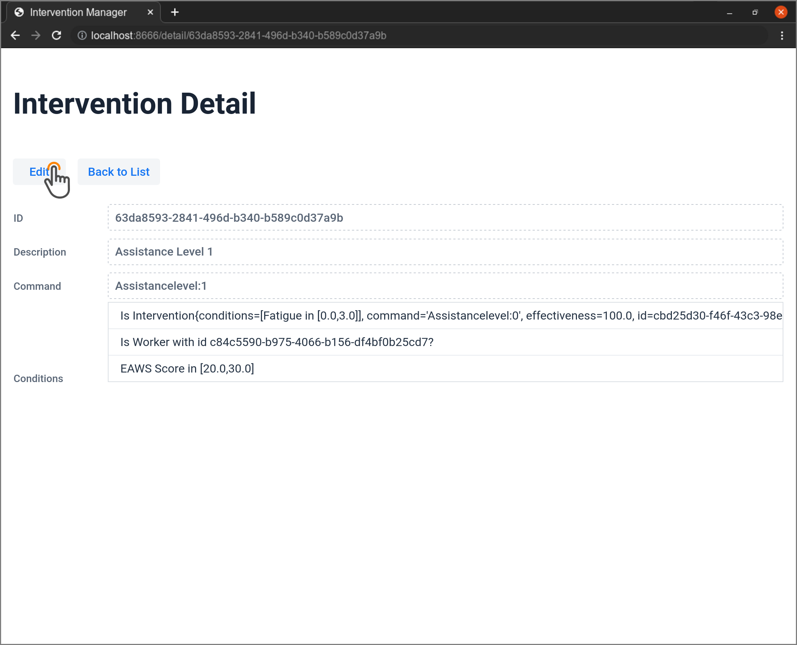

User Manual
Info
We assume the IM having its default configuration, thus being available on port 8666 of the hosting machine.
Management of the Interventions
This section introduces the reader to the GUI of the IM, with a focus on the management of the intervention rules. The management activity covers the following actions:
- VIEW: List existing interventions, with their details
- CREATE: Add new interventions to the IM
- DELETE: Remove existing interventions from the IM
- EDIT: Modify existing interventions. Specifically, an intervention
can be modified by:
- C-ADD: Adding new conditions
- C-REMOVE: Removing some conditions
In the following, some How-tos are provided to help the reader in dealing with the basic management of interventions through the IM GUI.
How-to: VIEW
Head to localhost:8666 from your Web browser. The browser will display the IM main page, as follows:

The main page lists all the available interventions.
Important
Interventions listed on the main page are all active.
How-to: CREATE
From the main, click the Add new Intervention at the bottom of the intervention list.

A new default intervention named NEW INTERVENTION is added to the list.

See the How-to: EDIT section to know how to customize the generated intervention.
How-to: EDIT
To edit an intervention, click on its description from the list of interventions in the main page.

A new page appears, showing the details of the selected intervention.
Click on the Edit button to enter the edit mode and make the fields editable.


How-to: C-ADD
To add a condition, start by selecting the type of condition.

The available types of condition are as follows:
LOW_REQUIREMENT-
Condition to check if the minimum requirements are met. Returns true when the job has higher requirements than the workers has traits.
DYNAMIC_PARAMETER_IN_RANGE-
Condition to check if a Dynamic Parameter is inside the specified range. Returns true when value is in the range.
IS_INTERVENTION_ACTIVE-
Condition to check if the specified intervention is active for the inspected worker. Returns true when the intervention is active.
IS_INTERVENTION_INACTIVE-
Condition to check if the specified intervention is not active for the inspected worker. Returns true when the intervention is not active.
IS_ON_WORKSTATION-
Condition to check if a worker is assigned to a workstation. Returns true when the worker is assigned to the specified workstation.
LOW_EXPERIENCE-
Condition to check if the worker has enough experience to carry out this work. Parameter is the minimum number of times the job has been executed.
IS_WORKER-
Condition to check if a worker is a specific person Returns true when the worker si the specified person (based on the id).
DYNAMIC_PARAMETER_IN_RANGE_WINDOW-
Condition to check if a Dynamic Parameter is inside the specified range for the given window and with the specified aggregation function. Returns true when value is in the range.
Depending on the chosen condition, a new window may pop-up, asking for specific information. The following figure depicts the condition parameters needed for the DYNAMIC_PARAMETER_IN_RANGE type.

Click the Add button to update the intervention with the new condition.
Warning
Adding a new condition will trigger a compatibility check. You may be alerted that "The selected condition is incompatible with the other declared for the current intervention".
The updated status of the intervention is then available to the user.

When satisfied with the set conditions, click the Save button to persist the modified intervention.
The updated details will be shown to the user. To know how to delete an existing condition, see the How-to: C-REMOVE section.

How-to: C-REMOVE
When you are in edit mode (checkout section How-to: EDIT to know how to enter this mode), click the "Trash Bin" icon next the condition to remove.

How-to: DELETE
To delete an intervention, click the "Trash Bin" icon next the intervention to remove from the list of interventions on the main page.